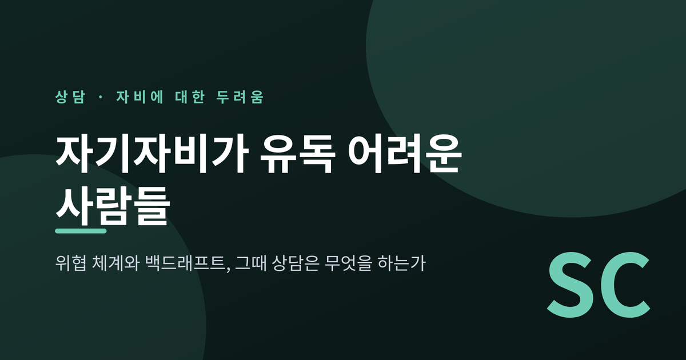
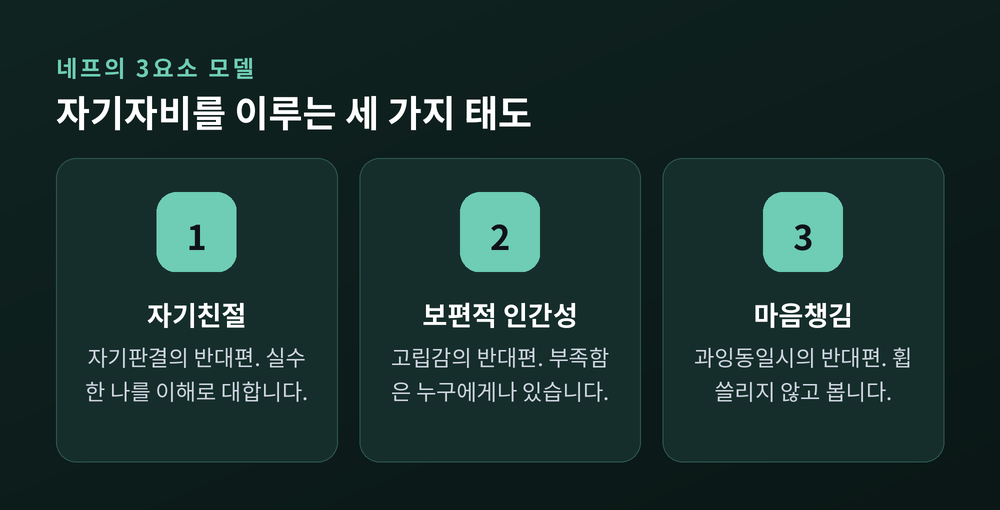
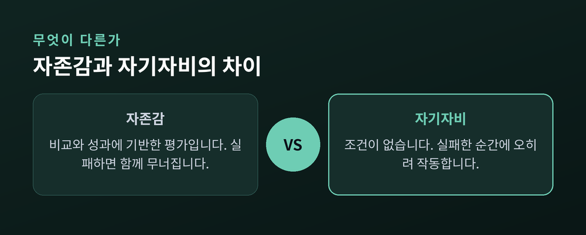
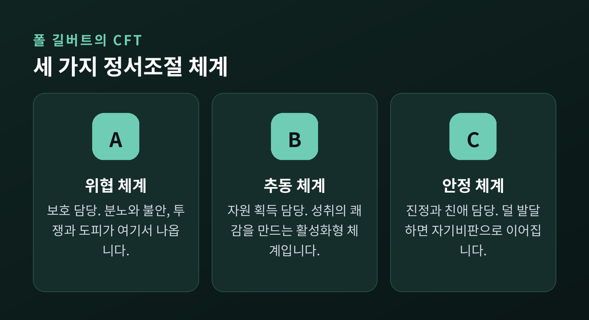
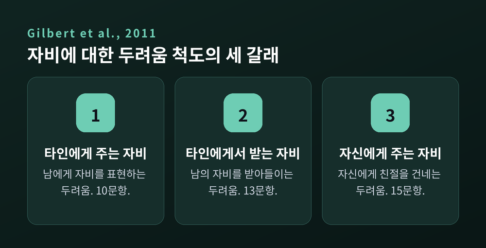
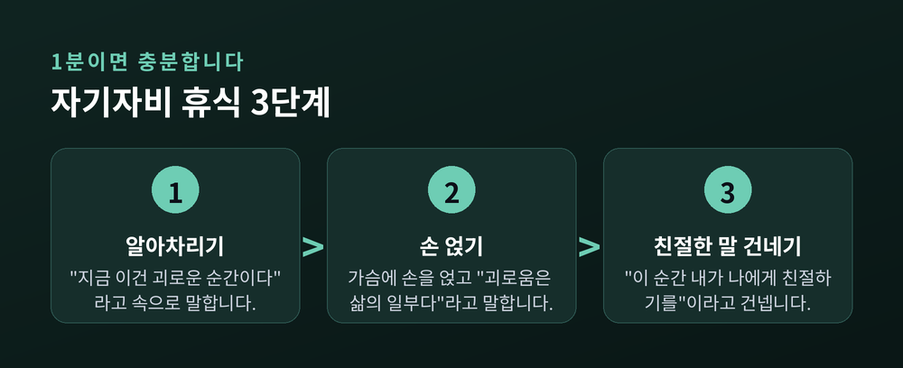
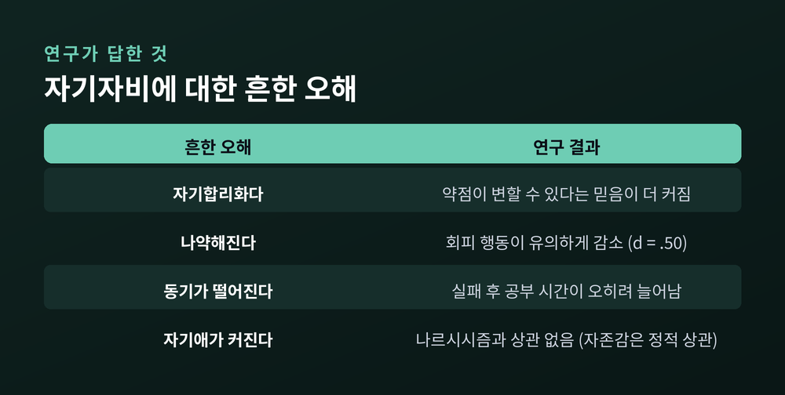
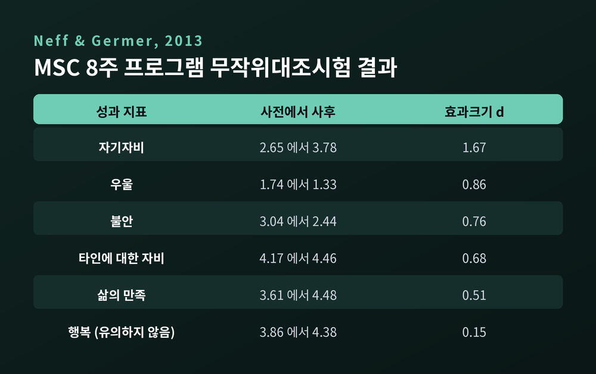

이번 글에서는 자기자비를 머리로는 알면서도 도무지 되지 않는 경우를 다뤄 보겠습니다. 개념 소개보다 그 앞을 가로막는 장벽 쪽에 초점을 두려 합니다. 자기비판이 심한 사람에게 자기자비가 왜 더 어려운지, 그리고 상담은 그 자리에서 무엇을 하는지 차례로 정리하겠습니다.
먼저 결론부터 말씀드립니다. 어떤 사람에게 자기자비는 위안이 아니라 위협으로 경험됩니다. 이것은 의지가 약해서가 아니라 정서조절 체계의 구조에서 비롯되며, 척도와 생리 지표로 측정되는 현상입니다. 그래서 자기자비 훈련의 관건은 더 세게 노력하는 일이 아니라 안전하게 접근하는 일입니다.

자기자비는 텍사스대학교 오스틴 캠퍼스의 크리스틴 네프(Kristin Neff)가 2003년 학술 개념으로 정립했습니다. 세 요소로 이루어집니다. 실수한 자신에게 판결을 내리는 대신 이해로 대하는 자기친절, 부족함이 나만의 것이 아님을 아는 보편적 인간성, 괴로운 감정을 억누르지도 그 감정과 자신을 통째로 동일시하지도 않는 마음챙김입니다. 네프는 2023년 『Annual Review of Psychology』 리뷰에서 이를 긍정 극 셋의 증가와 부정 극 셋의 감소, 즉 여섯 요소로 조작적으로 정의했습니다. 측정 도구인 자기자비 척도(SCS)는 26문항이고, 이 주제로 쌓인 학술 논문과 학위논문은 4,000편을 넘었습니다.

자존감과의 차이도 한 단락이면 충분합니다. 네프와 봉크(Neff & Vonk)가 2009년 『Journal of Personality』에 발표한 연구에서, 자기자비는 자존감보다 더 안정적인 자기가치감을 예측했고 특정 결과에 훨씬 덜 조건적이었습니다. 자존감은 나르시시즘과 정적 상관을 보였지만 자기자비는 나르시시즘과 상관이 전혀 없었습니다. 자존감이 "나는 남보다 나은가"라는 평가라면, 자기자비에는 그런 조건이 붙지 않습니다.

여기까지가 흔히 소개되는 내용입니다. 문제는 그다음에 생깁니다. 이 좋은 이야기를 다 듣고도 정작 자신에게는 한 줄도 적용되지 않는 사람들이 있습니다.
영국의 임상심리학자 폴 길버트(Paul Gilbert)가 개척한 자비중심치료(Compassion Focused Therapy, CFT)가 이 지점을 정면으로 다룹니다. CFT는 진화심리학과 인지행동치료를 결합하며, 세 가지 정서조절 체계를 이론의 뼈대로 삼습니다. 각각 다른 감정과 동기, 신경화학적 기반을 갖습니다.
위협 체계는 보호를 담당합니다. 위협을 탐지해 주의를 돌리고 대응하게 만듭니다. 분노와 불안, 혐오가 여기 속하고 투쟁·도피·경직이 그 행동입니다.
추동 체계는 자원 획득을 담당합니다. 유리한 자원을 알아채고 확보할 때 추동과 쾌감을 느끼게 하는 활성화형 긍정 체계입니다.
안정 체계는 만족과 진정, 친애를 담당합니다. 위협도 추구도 멈춘 평온의 상태입니다.

관건은 균형입니다. 수치심과 자기비판이 높은 사람은 위협 체계가 과활성 상태에 있고, 그 과활성이 추동 체계와 안정 체계를 함께 눌러 버립니다. 이런 불균형은 트라우마나 방임에서 비롯되는 경우가 많습니다.
자기비판이 심한 사람의 내부 지형이 이렇게 그려집니다. 위협 체계는 늘 켜져 있고, 그 불안을 추동 체계로 보상하려 합니다. 성취로 자신을 진정시키려는 셈입니다. 정작 진정을 맡아야 할 안정 체계는 비어 있습니다.
몸에서 확인된 자료도 있습니다. 록클리프(Rockliff)와 길버트 연구진이 2008년 『Clinical Neuropsychiatry』에 발표한 파일럿 연구입니다. 자비 중심 심상을 유도한 뒤 심박변이도와 타액 코르티솔을 측정했습니다. 어떤 참가자는 심박변이도가 올라갔고, 이들에게서는 코르티솔도 유의하게 떨어졌습니다. 그런데 심박변이도가 오히려 내려간 참가자들이 있었습니다. 그 차이를 가른 것이 자기비판 수준과 애착 유형이었습니다.
같은 자극이 누군가에게는 진정이고 누군가에게는 위협이었던 것입니다. 연구진의 결론도 그래서 신중합니다. 자기비판이 높고 애착이 불안정한 사람은 자비 심상의 이득을 보기 위해 별도의 치료적 개입이 필요할 수 있다고 적었습니다. 다만 파일럿 연구이고 표본이 작다는 점은 함께 짚어야 합니다.
길버트와 프록터(Gilbert & Procter)가 2006년 『Clinical Psychology & Psychotherapy』에 수치심과 자기비판이 높은 사람들을 위한 첫 집단 자비 마음 훈련을 보고했습니다. 여기서 예상 밖의 반응이 나왔습니다. 많은 참가자가 자기자비로워지는 것 자체를 두려워했습니다.
이 피드백에서 자비에 대한 두려움 척도(Fears of Compassion Scales)가 나왔습니다. 길버트 연구진이 2011년 발표한 이 척도는 세 하위척도로 구성됩니다. 타인에게 자비를 표현하는 것에 대한 두려움 10문항, 타인에게서 오는 자비를 받아들이는 것에 대한 두려움 13문항, 자신에게 친절과 자비를 표현하는 것에 대한 두려움 15문항입니다.

자기자비를 두려워하는 사람들에게는 공통점이 있습니다. 자신을 비판하는 경향이 강하고, 자신이 그럴 자격이 없다고 믿으며, 자기자비를 나약함으로 간주합니다. 회피형 애착과의 연관도 함께 보고됩니다.
2019년 『Clinical Psychology Review』에 실린 메타분석은 이 두려움이 무엇과 얽히는지 보여 줍니다. 가장 강하게 연결된 변인은 수치심과 자기비판, 그리고 우울이었습니다. 통합 효과크기는 절댓값 기준 r = .13에서 .55 사이였습니다. 그리고 이 연결은 비임상군보다 임상군에서 더 강하게 나타났습니다.
자기자비가 가장 필요한 사람이 자기자비를 가장 두려워합니다. 이 역설이 상담의 출발점입니다.
두려움을 넘어 연습을 시작한 뒤에도 비슷한 일이 벌어집니다. 크리스 거머(Chris Germer)는 이를 백드래프트(backdraft)라고 부릅니다.
소방 용어입니다. 불난 집의 문을 활짝 열면 산소가 밀려들고 불길이 밖으로 솟구치는 현상을 가리킵니다. 마음도 비슷합니다. 문을 열어 따뜻함이 들어오면 억눌러둔 과거의 고통과 불안이 함께 솟구칩니다. 네프는 이렇게 설명합니다. 스스로에게 애정을 건네는 순간, 사랑받지 못했던 모든 조건들이 함께 떠오른다고 말입니다.
거머와 네프는 이 현상을 실패로 보지 않습니다. MSC 프로그램에서 역류는 정서적 변형의 필수 과정으로 오히려 환영됩니다. 따뜻함의 빛을 비출 때 숨어 있던 상처가 드러나고, 거기에 친절을 건네면 상처의 날이 무뎌지기 시작하기 때문입니다.
"역류는 잘못하고 있다는 신호가 아니라, 마음의 문이 열리기 시작했다는 신호입니다."
다만 조건이 하나 붙습니다. 안전해야 합니다. 네프는 역류를 다룰 때 몸을 바닥에 붙들어 두는 연습을 함께 권합니다. 앉거나 서거나 걸으면서 발바닥이 바닥에 닿는 감각을 느끼는 것입니다. 주의를 머릿속 생각에서 물리적으로 가장 먼 곳으로 옮기는 방법이고, 5분이면 됩니다. 발바닥이 바닥에 닿아 있다는 감각은 지지받고 있다는 느낌으로도 이어집니다.
CFT의 중심 기법은 자비 마음 훈련(compassionate mind training)입니다. 길버트의 설명을 옮기면, 자비와 자기자비를 통해 내면의 따뜻함과 안전감, 진정의 경험을 발달시키고 그것을 다루도록 돕는 작업입니다. 목표는 수치심과 자기비판에 결부된 인지·정서 패턴을 바꾸는 데 있습니다.
순서가 중요합니다. CFT는 자비를 먼저 3인칭으로 이해하게 한 뒤, 그 사고 과정을 자신에게 옮기도록 가르칩니다. 자신에게 곧바로 따뜻함을 보내라고 요구하지 않습니다. 앞서 본 대로 그 요구 자체가 누군가에게는 위협 자극이 되기 때문입니다.
치료 관계도 기법의 일부입니다. 길버트와 아이언스는 CFT의 과정을 네 축으로 정리합니다. 어려움에 다가갈 수 있게 하는 긍정적 치료 관계를 만드는 것, 고통의 본질에 대해 비난하지 않는 이해를 기르는 것, 자비의 속성을 경험하고 길러 내는 능력을 키우는 것, 그리고 타인에 대한 자비와 타인에게서 오는 자비, 자기자비를 함께 발달시키는 것입니다. 내담자가 상담자와의 상호작용 안에서 안전감을 먼저 경험해야, 탐색한 내용을 견딜 수 있습니다.
자기자비 휴식(Self-Compassion Break)은 이 긴 작업을 일상 크기로 줄여 놓은 도구입니다. 캘리포니아대학교 버클리의 Greater Good in Action이 공개한 절차는 세 단계로 되어 있습니다.

1단계는 알아차림입니다. "지금 이건 괴로운 순간이다"라고 속으로 말합니다. 2단계는 손을 얹는 것입니다. 양손을 가슴에 얹고 온기를 느끼며 "괴로움은 삶의 일부다"라고 말합니다. 3단계는 친절한 말을 건네는 것입니다. "이 순간 내가 나에게 친절하기를."
길어야 1분입니다. 다만 여기까지 읽으셨다면 짐작하시겠지만, 이 1분이 누구에게나 1분인 것은 아닙니다. 가슴에 손을 얹는 순간 무언가가 올라온다면 그것은 실패가 아니라 정보입니다. 그럴 때 필요한 것은 더 세게 밀어붙이는 일이 아니라, 속도를 늦추고 곁을 두는 일입니다.
효과는 임상 현장에서도 확인됩니다. 임상군을 대상으로 한 2023년 CFT 메타분석은 자기자비 0.19~0.90, 자기비판 0.15~0.72, 자기안심 0.43~0.81의 효과크기를 보고했습니다. 자비에 대한 두려움 자체에 대한 효과크기는 0.18이었습니다. 다만 범위가 넓습니다. 소효과부터 대효과까지 섞여 있어 단일 수치로 단정하기는 어렵습니다.
여기까지 읽고도 남는 반문이 있을 것입니다. 이 질문에는 일반론보다 수치로 답하는 편이 낫습니다.
브라이네스와 첸(Breines & Chen)이 2012년 『PSPB』에 발표한 네 차례의 실험이 가장 직접적입니다. 자기자비 조건에 배정된 참가자들은 자존감 통제조건이나 무개입 조건의 참가자들보다, 자신의 약점이 변할 수 있다는 믿음을 더 강하게 표현했습니다. 최근의 도덕적 과오를 보상하고 되풀이하지 않으려는 동기도 더 컸습니다. 첫 시험에 실패한 뒤에는 어려운 시험 공부에 더 많은 시간을 썼고, 약점을 성찰한 뒤에는 상향 사회비교를 선호했습니다.
나약해진다는 우려에도 수치가 답합니다. 뒤에 소개할 MSC 무작위대조시험에서 회피 행동은 유의하게 줄었습니다(d = .50). 회피야말로 나약함의 지표인데, 자기자비는 그 반대 방향으로 움직였습니다. 자기애가 커진다는 우려 역시 앞서 본 나르시시즘과의 무상관으로 반박됩니다.

자기자비는 책임을 면제하는 장치가 아닙니다. 책임을 감당할 여력을 만드는 쪽에 가깝습니다.
가장 직접적인 개입 근거는 네프와 거머가 2013년 『Journal of Clinical Psychology』에 발표한 MSC 무작위대조시험입니다. 처치군 25명, 대기자 통제군 27명으로 진행됐습니다. 자기자비 점수는 5점 만점에 2.65에서 3.78로 올랐고, 효과크기는 d = 1.67이었습니다. 우울 d = .86, 불안 d = .76, 마음챙김 d = .60이었습니다. 6개월과 1년 추적에서 성과는 유지됐고, 삶의 만족은 1년 뒤에 오히려 더 올랐습니다.

메타분석도 같은 방향을 가리킵니다. 맥베스와 검리(MacBeth & Gumley)의 2012년 메타분석은 자기자비와 정신병리의 관계를 r = −0.54로 보고했습니다. 페라리(Ferrari) 등의 2019년 메타분석은 무작위대조시험 27편을 모아 우울 g = 0.66, 불안 g = 0.57을 확인했습니다. 서로 다른 자료가 같은 구간에 도달했다는 점이 이 수치의 신뢰도를 받칩니다.
자기비판 자체를 겨눈 연구도 있습니다. 웨이클린(Wakelin) 등이 2022년 무작위대조시험 20편, 참가자 1,350명 자료로 분석한 결과 자기비판은 통제군 대비 중간 수준으로 감소했습니다(Hedges' g = 0.51). 개입 기간이 길수록 감소 폭이 컸습니다.
한계도 분명합니다. MSC 무작위대조시험은 참가자가 52명이고, 1년 추적을 마친 사람은 15명입니다. 같은 연구에서 사회적 연결감(d = .13)과 행복(d = .15)은 집단 간 차이가 유의하지 않았습니다. 길버트와 프록터의 2006년 집단 훈련은 참가자가 6명이었습니다. 웨이클린 연구진도 포함 연구의 질이 중간 수준이고 이질성이 높다고 스스로 밝혔습니다. 17개국 7,875명의 자료를 통합한 2024년 CFT 메타분석은 전반적 효과를 확인하면서도, 더 크고 질 높은 무작위대조시험이 필요하다고 함께 결론지었습니다.
효과는 확인됩니다. 다만 아직 완벽하지는 않습니다.
결국 남는 것은 하나입니다.
자기자비가 안 된다고 느끼셨다면, 마음이 모자라서가 아닐 가능성이 높습니다. 위협 체계가 오래 켜져 있던 사람에게 따뜻함은 낯선 자극이고, 낯선 자극은 경계를 부릅니다. 예전에는 그 반응을 저항이라고 불렀습니다. 지금은 출발점으로 봅니다.
한 가지는 분명히 덧붙이겠습니다. 혼자 감당하기 어려운 무게라면, 혹은 일상 기능이 무너질 정도로 힘든 시기를 지나고 있다면, 상담사나 정신건강 전문가와 상의하시길 권합니다. 앞서 본 자비에 대한 두려움과 백드래프트는 실제로 일어나는 현상이고, 그럴 때는 곁에서 함께 봐 줄 사람이 있는 편이 안전합니다. 이 글은 이해를 돕기 위한 정보이지 진단이나 치료를 대신하지 않습니다.
자신에게 친절해지는 일이 왜 이렇게 어렵냐고 물으신다면, 그만큼 오래 반대쪽을 연습해 왔기 때문이라고 답하겠습니다. 오래 걸리는 편이 오히려 자연스럽습니다.